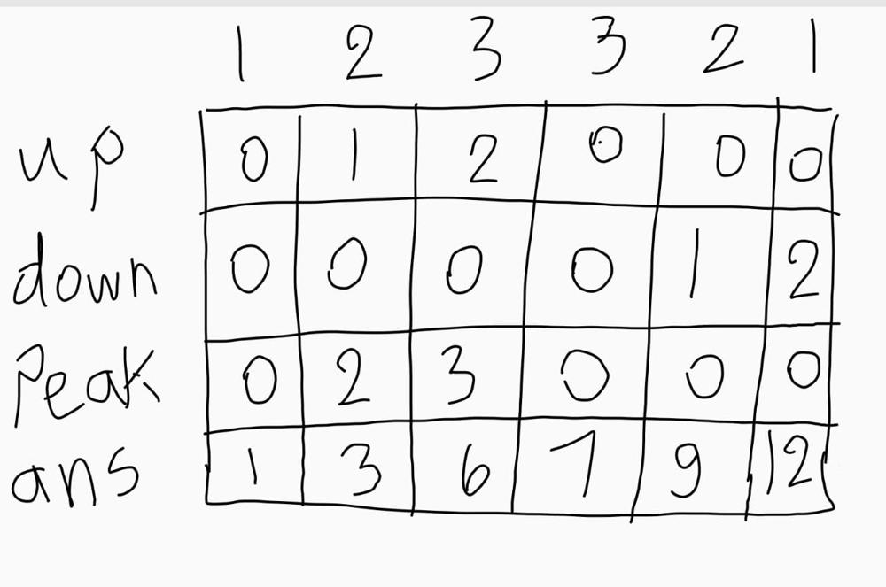
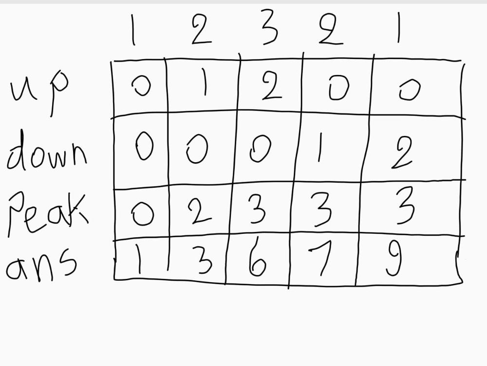

The task is distributing candies to a group of n children standing in a line. Each child is assigned a rating value, represented as an integer array called ratings.
Follow two specific requirements while distributing the candies:
The goal is to determine the minimum number of candies needed to satisfy these requirements and distribute the candies to the children accordingly.
n == ratings.length1 <= n <= 2 * 1040 <= ratings[i] <= 2 * 104Hi there😀
Let's take a look on this interesting problem.
For our candies task we have two crucial requirements: Each child must have at least one candy, and children with higher ratings than their neighbors have more candies than them... Interesting.
Let's explore some ratings' cases together:
2, 2, 2 Here we can see that each child of them can have one candy since no one has higher rating than its neighbor.
1, 2, 2, 2 Here we can see that the array of candies will be 1, 2, 1, 1.
9, 8, 7Here we can see that array of candies will be 3, 2, 1.
7, 8, 9Here we can see that array of candies will be 1, 2, 3.
I think now we have some idea about what is going on here🤔
How can we use an approach that take care of these observations?🚀
In this approach we will:
left to right to take care of increasing subarraysright to left to take care of decreasing subarraysLet's take an example:
9, 8, 8, 7, 7, 8, 9First we have array of candes 1, 1, 1, 1, 1, 1, 1
After our first pass (from left to right) we will have array of candies 1, 1, 1, 1, 1, 2, 3.
We can see that it handled the increasing subarray perfectly.
After our second pass(from right to left) we will have array of candies 2, 1, 2, 1, 1, 2, 3 .
we can see that it also handled the decreasing subarray perfectly.
Also, it handled the equal neighbours after the two passes. It finally minimized our candies.
This solution is more challenging since it requires us to handle the three cases in one pass. How can we start? 🤔
We saw before that we have three cases increasing subarrays, decreasing subarrays and equal subbarrays.
We can start by intialize three variables to handle the three of them.
For increasing subarray we need one variable up to handle what candy we give to current child.
for each child in the increasing subarray increase the up variable by one and give the current child up + 1 candies indicating that it must have more that the child before him
we will call up + 1 as peak to mean the highest child in our subarray
For equal subarrays, only give them one candy and we will see that we only give one to the children in the middle of the subarray
For decreasing subarray here comes the challenge
We will introduce variable like first case called down but the purpose of it not indicating that we give candies to current child but, giving one candy to current child and one candy for each child before him in the decreasing subarray to meet the requirements.
Example : 1, 2, 3, 3, 2, 1

But what if we have increasing then decreasing subarrays?
We will have the last child of the first subarray as first child on the second and then we give each child in the decreasing subarray one candy except that child who is our peak until the length of the subarray is larger than the peak.
Example : 1, 2, 3, 2, 1

n is number of children.candies to store candies for each child..2*N which is O(N).O(N).n to store the number of children.upCount to keep track of consecutive increasing ratings.downCount to keep track of consecutive decreasing ratings.peakCount to store the number of candies at the peak of increasing ratings.totalCandies to count required candies.peakCount to totalCandies.1 to totalCandies.totalCandies by adding downCount + 1, subtracting 1 if peakCount is greater than downCount.totalCandiesN which is O(N).O(1).class Solution {
public:
int candy(vector<int>& ratings) {
int n = ratings.size(); // Get the number of children
vector<int> candies(n, 1); // Initialize a vector to store the number of candies for each child
// First pass: Check ratings from left to right
for(int i = 1; i < n; i++){
if(ratings[i - 1] < ratings[i] && candies[i - 1] >= candies[i]){
// If the current child has a higher rating and fewer or equal candies than the previous child,
// give them one more candy than the previous child
candies[i] = candies[i - 1] + 1;
}
}
// Second pass: Check ratings from right to left
for(int i = n - 2; i >= 0; i--){
if(ratings[i + 1] < ratings[i] && candies[i + 1] >= candies[i]){
// If the current child has a higher rating and fewer or equal candies than the next child,
// give them one more candy than the next child
candies[i] = candies[i + 1] + 1;
}
}
int totalCandies = 0;
// Calculate the total number of candies needed
for(int i = 0; i < n; i++){
totalCandies += candies[i];
}
return totalCandies;
}
};public class Solution {
public int candy(int[] ratings) {
int n = ratings.length; // Get the number of children
int upCount = 0, downCount = 0, peakCount = 0, totalCandies = 1; // Initialize variables
for (int i = 1; i < n; i++) {
if (ratings[i - 1] < ratings[i]) {
// If the current child has a higher rating than the previous one
downCount = 0;
upCount += 1;
peakCount = upCount + 1;
totalCandies += peakCount;
} else if (ratings[i - 1] == ratings[i]) {
// If the current child has the same rating as the previous one
downCount = 0;
upCount = 0;
peakCount = 0;
totalCandies += 1;
} else {
// If the current child has a lower rating than the previous one
downCount += 1;
upCount = 0;
totalCandies += downCount + 1 - (peakCount > downCount ? 1 : 0);
}
}
return totalCandies;
}
}